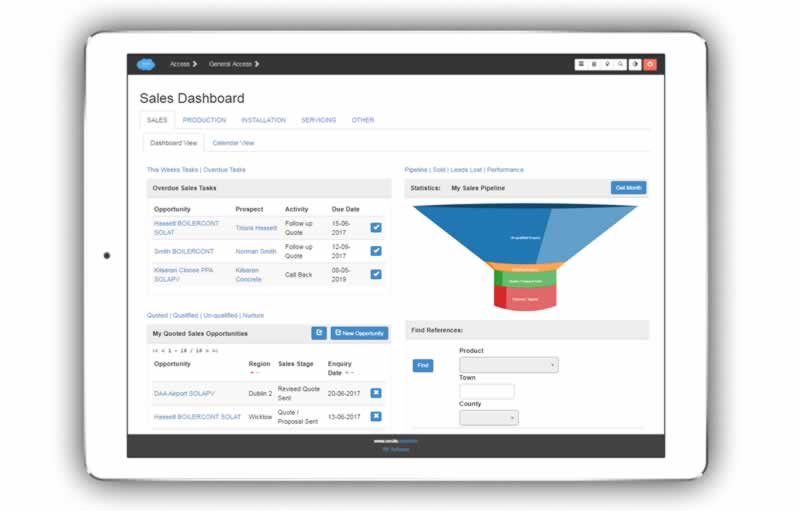
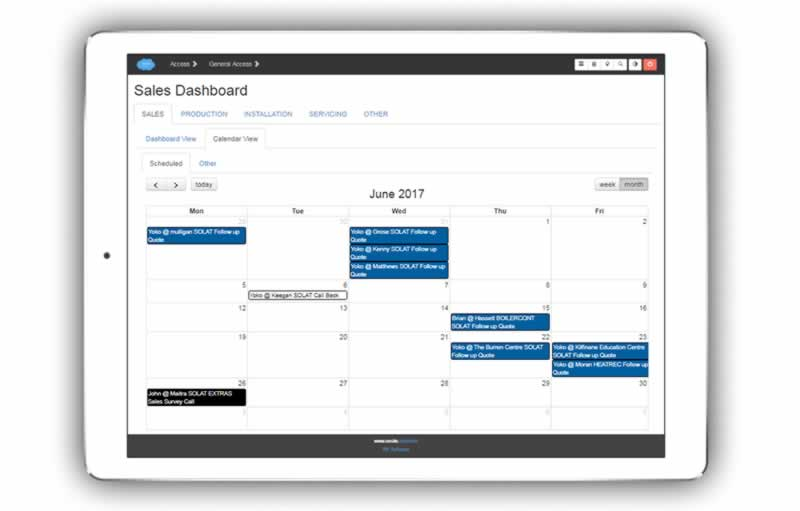
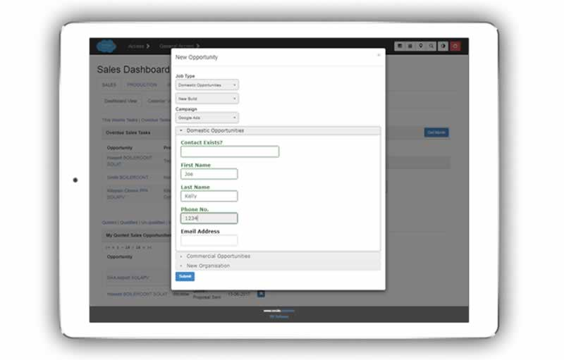
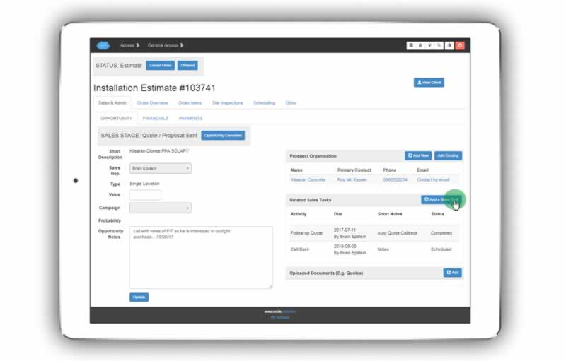
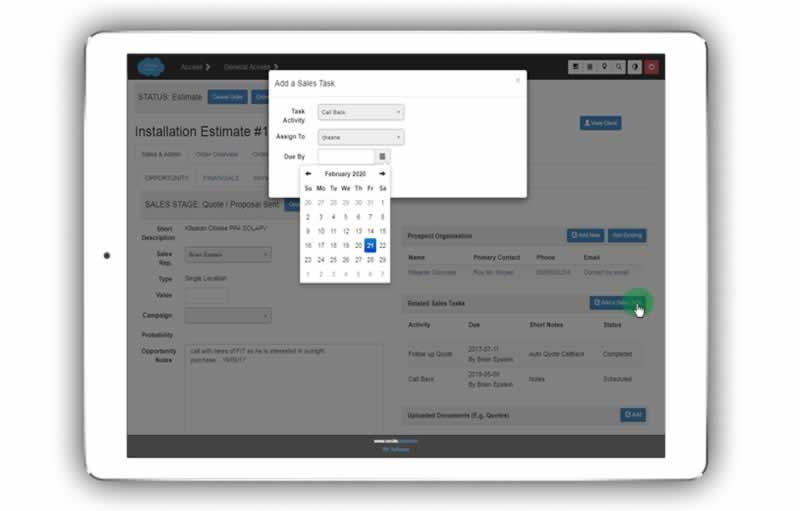
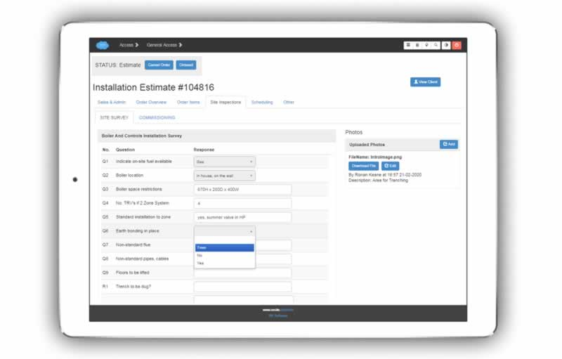

The sales module integrates with all other modules to give you a continuous view of your customer - from initial sales contact through to installing equipment for the customer, periodically servicing it (if required) and the ensuing years of the relationship.
The Salesperson may choose one of these views as best suits them.
The dashboard view enables them to view all of their own tasks and opportunities, with easy filter and manipulation of interactive lists.
While the calendar view enables them to view all sales tasks for the company for the week or month, with interactive click through to details about the opportunity and estimate.
Tap the ‘New Opportunity’ button on the Sales dashboard to bring up the dialogue shown below (and darken the background screen).
Note that this dialogue is customised for each client, dependent on their client base and how they describe their job types.
On the screen shot above, the ‘Domestic Opportunity’ accordian section of the form has been expanded while the others remain collapsed.
Details for the new opportunity are entered as required.
Note the ‘Contact Exists’ field, to check if the contact to be entered is already on the system. If so, the new opportunity would be entered on the existing contact screen.
Sales tasks for the week are listed at the top of the dashboard, indicating the type of task, its due date, and the opportunity and contact it relates to.
Overdue tasks may be viewed by clicking the list-filtering link above the list.
To quickly mark the task completed, press the ‘tick’ icon to the right.
For the detail view of the opportunity, just click through the opportunity name.
Similarly click through the contact name for detail information about the contact, including their employing organisation if any, previous estimates, installations and servicing done.
Note
A new tab will open in your browser for this information to accomodate keeping multiple opportunities or contacts to hand, for example, if waiting on a call back.
When you click through to the detail view of an opportunity, you can create new sales tasks by clicking the ‘Add a Sales Task’ button.
Dialogue brought up on click as below.
You then choose (a) the type of sales task, e.g. call back, client visit, send information etc. (b) who to assign it to if other than yourself. (c) the due date for the task.
If the tasks are assigned to yourself, you can update on screen the due date, the status of the task, and add short notes about the task.
Your open opportunities are listed below your task list.
They are organised according to their sales stage. Just click the list-filtering links to see all opportunities having that sales stage. E.g. Qualified Opportunities.
Quickly cancel an open opportunity by clicking the ‘x’ icon to the right of it.
Note
You may label the sales stages according to how your own sales organisation works.
When you click through to the detail page of a sales opportunity you can assign a sales rep, a value, a marketing campaign that yielded the opportunity, and notes about the opportunity.
Ensure you click the ‘update’ button after making any changes.
In addition you can update the sales stage according to the stages you work with within your organisation.
Note
The sales stage may be triggered automatically rather than manually if desired. For example, you can make the change from ‘quote sent’ to ‘order confirmed’ dependent on recording a deposit payment within the system.
Sales tasks are handled as described in the above section - Creating a new sales task for an opportunity
Contacts associated with the opportunity may be added by clicking ‘Add Existing’ button if an existing contact, or ‘Add New’ if a new contact.
On the sales dashboard is a section displaying the performance of the sales person logged in for that week.
Click the ‘Get Month’ button to display the performance over the month.
Pipeline
Sold
Leads Lost
Performance (ratios etc.)
Note
Management may get a much more detailed view and breakdown of the performance of all staff over whatever time period they require. Please refer to section - Management Reporting
Finally on the sales dashboard there is a section to quickly look up previous customers, by installed product category and geographical location. This can be especially useful for selling to domestic prospects.
We might simply describe this as the activities required to produce an estimate.
Note
All information gathered at this stage by the sales internal person or organisation is available at later ‘Confirmed Order’ stage. Only the status of the sales order changes from ‘Estimate’ to ‘Confirmed Order’ (or similar in your own preferred terminology).
The core activities of learning about site conditions (whether by visiting the site or studying provided drawings) and specifying the equipment to be installed (whether by learning about customer requirements directly, or meeting the specifications set out in tender documents) are captured on the appropriate tab on the customer order screens.
As the system is pre-populated with the organisation’s products, services, and survey templates, this can be done quickly and intuitively with a few clicks, and minimum text entry.
Note
For more on estimating and other topics in this section, please refer to the section - THE INSTALLATION ORDER where processes involved are discussed as pertaining to both sales and post-sales. (In other words, after the order has been won by the sales organisation other personnel will continue to build up needed detail about site conditions and specification of equipment.)